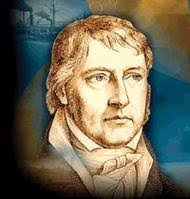
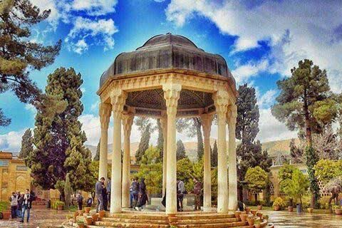

هگل شناسی
هگل برای دستیابی و کشف حقایق، روش و طریق خاصی را مطرح کرد و آن را دیالکتیکنامید.
دکارت
رِنه دِکارت ریاضیدان، دانشمند و فیلسوف عقل گرای نامدار فرانسوی عصر روشنگری بود.
کانت
ایمانوئل کانت فیلسوف سرشناس آلمانی در عصر روشنگری و کارساز در فلسفه جدید بود. او یکی از فیلسوفان کلیدی عصر روشنگری است و فلسفهٔ وی از اندیشههای چیره بر نیمهٔ نخست سدهٔ نوزدهم است..

حافظ شناسی
خواجه شمسالدین محمد شیرازی متخلص به «حافظ»، غزلسرای بزرگ و از خداوندان شعر و ادب پارسی است. وی حدود سال ۷۲۶ هجری قمری در شیراز متولد شد.